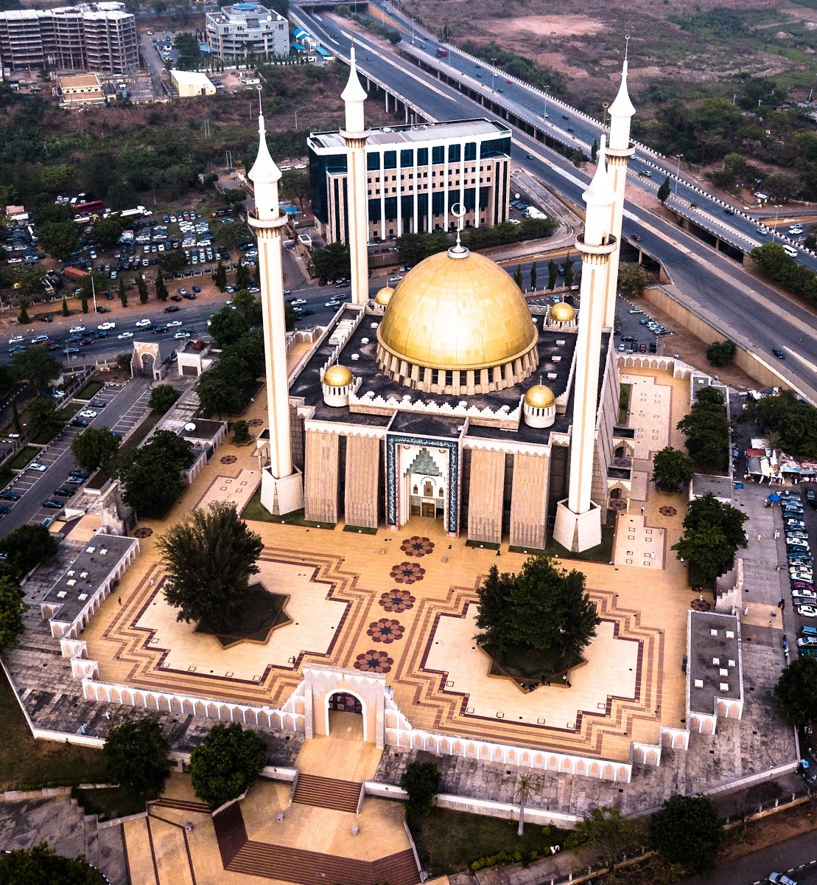

Aso Rock
A famous natural landmark and symbol of Abuja.
Explore the history, culture, and famous landmarks of Nigeria's capital city.
Abuja is a modern city filled with natural wonders, architectural landmarks, and cultural experiences. Heritage Abuja Explorer helps visitors discover important locations that represent Nigeria's identity.
A famous natural landmark and symbol of Abuja.

One of Nigeria's most recognizable buildings.